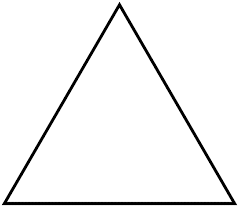
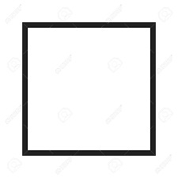
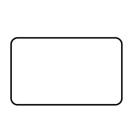

The definition of geometry is a branch of math that focuses on the measurement and relationship of lines, angles, surfaces, solids and points.
for example of the picture:
| Name | Pictures |
|---|---|
| triangle |  |
| square |  |
| rectangle |  |
For example:

triangle formula: (base×height)/2

area=1/2×137×203=13905.5
Question 1:
True or False: Two parallel lines intersect.
1.A triangle is a closed planar shape with
A.2 sides
B.4 sides
C.3 sides
D.5 sides
2.A closed planar shape with 5 sides is called a
A.pentagon
B.hexagon
C.square
D.heptagon
3.A closed planar shape with 4 A.sides is called a
B.segment
C.hexagon
quadrilateral
D.heptagon
4.A line segment is defined by
A.1 point
B.3 points
C.2 points
D.4 points
5.An equilateral triangle has
A.only 2 equal sides
B.all 3 sides equal
C.no equal sides
D.one right angle
6.Which of the statements below best describes a square?
A.A square has 4 equal sides and 4 right angles.
B.A square has 4 equal sides.
C.A square has 4 right angles.
D.2 pairs of parallel sides.
7.Which pair of lines are parallel?

square formula:area=a2
Please calculate the area.
area=a2
↡area=72
↡area=49
Question:

rectangle formula:area=length×width
Question:
Length of the rectangle = 12 cm
Breadth of the rectangle = 9 cm
Find out the area.
Length of a rectangle = 43 m.
Breadth of a rectangle = 13 m.
Find out the area.
Area of rectangle = 48 cm2
Breadth of rectangle = 6 cm
Find out the length.